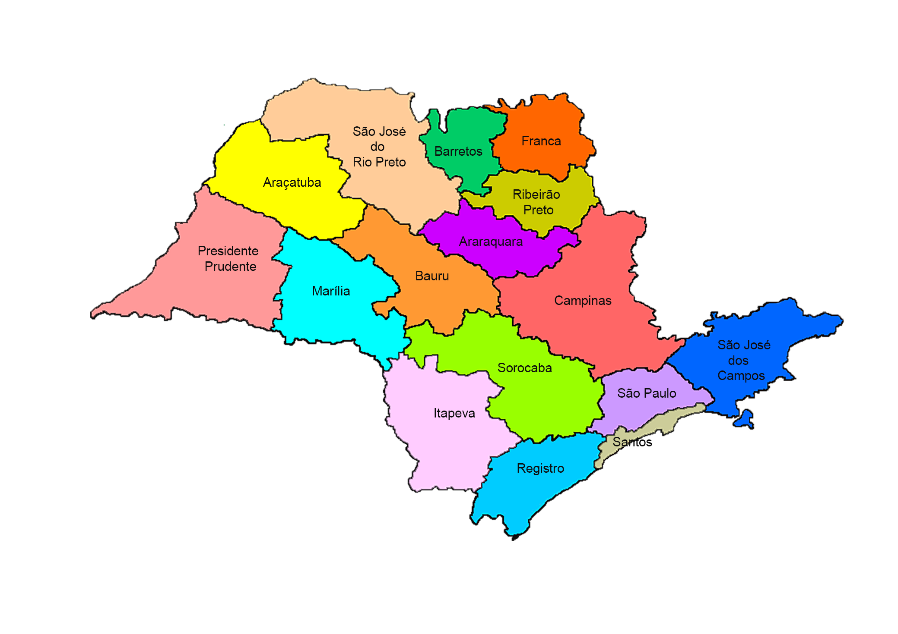
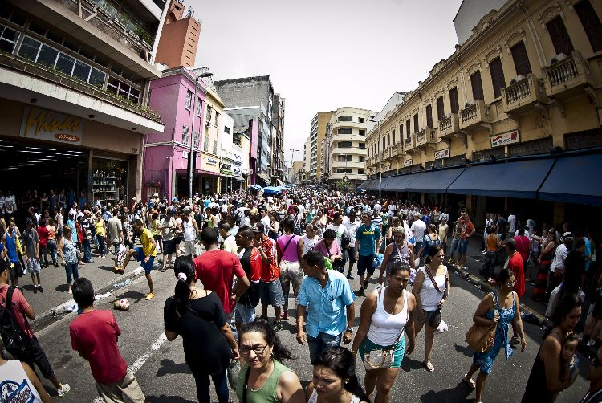

O estado de São Paulo é o mais rico e economicamente desenvolvido do Brasil, responsável por cerca de um terço do Produto Interno Bruto (PIB) nacional. Sua economia é diversificada, com destaque para a indústria automobilística, metalúrgica, química, de tecnologia e agronegócio. Além disso, São Paulo é um importante centro financeiro e comercial, abrigando a Bolsa de Valores B3, que é a maior da América Latina.

São Paulo possui várias cidades de grande importância econômica e cultural. A capital, São Paulo, é a maior metrópole do país e uma das maiores do mundo, conhecida por sua intensa atividade econômica, diversidade cultural e infraestrutura avançada. Outras cidades importantes incluem Campinas, que é polo tecnológico e industrial; Ribeirão Preto, conhecida pelo agronegócio e saúde; e Santos, maior porto da América Latina, fundamental para o comércio exterior.

Em termos populacionais, São Paulo é o estado mais populoso do Brasil, com aproximadamente 46 milhões de habitantes, o que corresponde a cerca de 21% da população brasileira. Essa grande concentração demográfica traz desafios e oportunidades, influenciando áreas como transporte, educação, saúde e habitação, além de fazer do estado um polo cultural e social de grande relevância para o país.
Quanto à política, o governador atual de São Paulo é Tarcísio de Freitas, eleito nas últimas eleições. Ele é filiado ao Partido Republicanos e tem foco em projetos de infraestrutura, segurança pública e desenvolvimento econômico, buscando manter o estado como líder nacional em inovação e qualidade de vida.
Elaborado por Guilherme Henrique de Souza